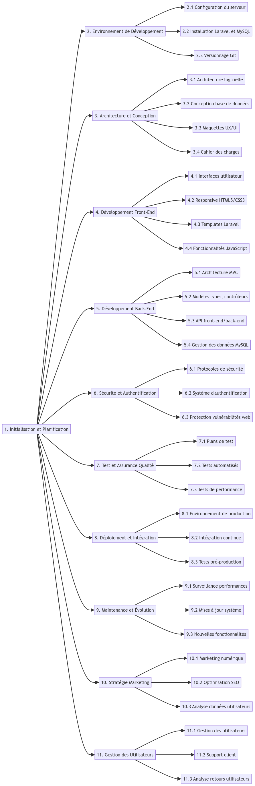

Présentation de la Structure de Répartition du Travail (WBS) pour le Développement d'un Site E-commerce
La réalisation d'un projet de développement de site e-commerce implique une série de tâches complexes et interdépendantes. Notre objectif est de structurer efficacement ces tâches pour assurer une gestion de projet fluide et une mise en œuvre réussie. Dans cette optique, nous avons élaboré une Structure de Répartition du Travail (Work Breakdown Structure - WBS) complète et détaillée pour notre projet de site e-commerce développé avec les technologies Laravel et MySQL. La WBS est un outil de gestion de projet essentiel qui décompose le projet en composants gérables. Elle nous aide à visualiser les principales phases du projet, les livrables clés et les activités spécifiques nécessaires pour atteindre les objectifs du projet. Cette approche systématique assure que tous les aspects du projet sont pris en compte, facilitant ainsi la planification, l'allocation des ressources, la gestion des risques et la communication au sein de l'équipe.
Work Breakdown Structure
- 
Conclusion
- En conclusion, la Structure de Répartition du Travail que nous avons élaborée pour notre projet de site e-commerce en Laravel et MySQL est un cadre de travail détaillé qui guide notre équipe à travers les différentes étapes du développement. Elle sert de feuille de route pour le projet, assurant que chaque tâche est clairement définie et attribuée, réduisant ainsi les risques d'omissions ou de chevauchements dans le travail.